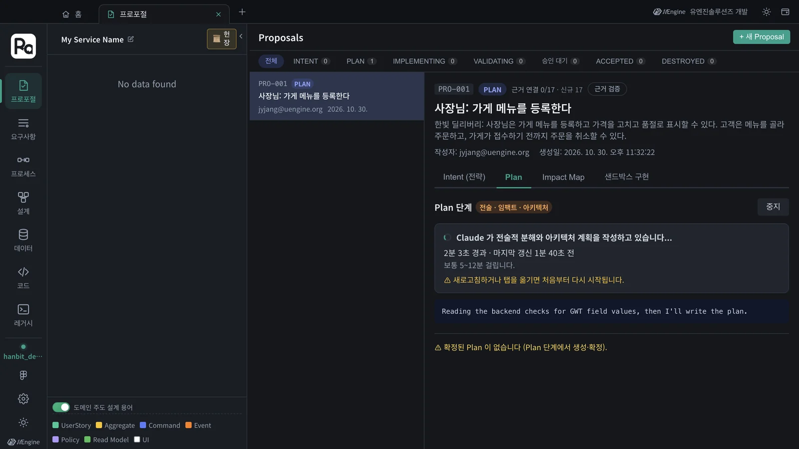
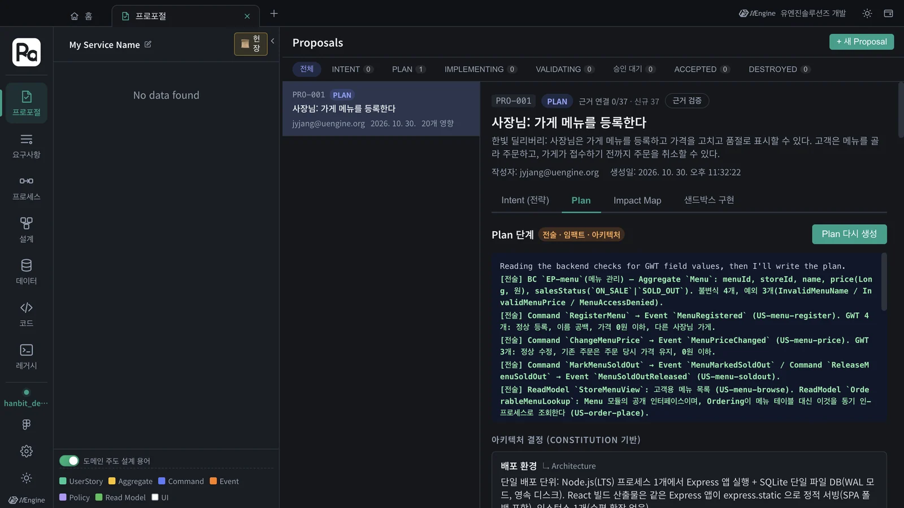
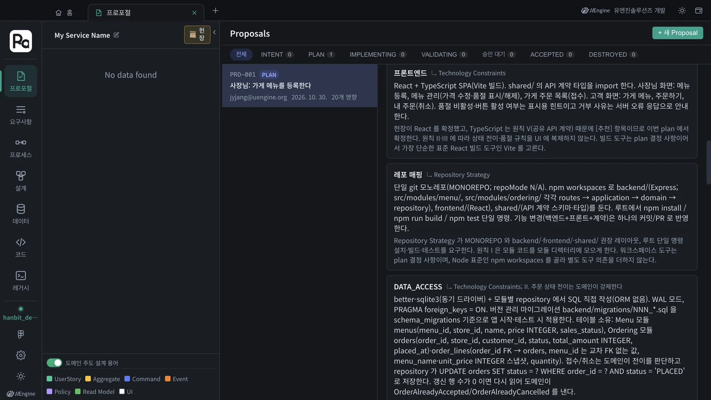
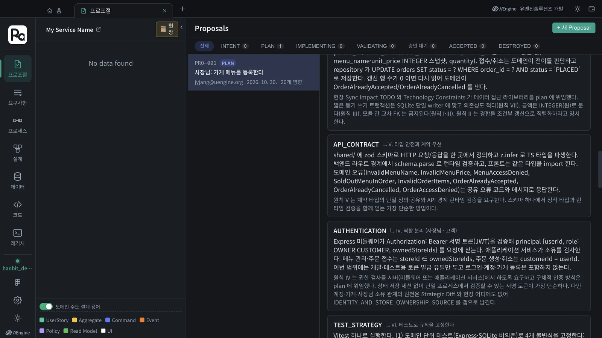
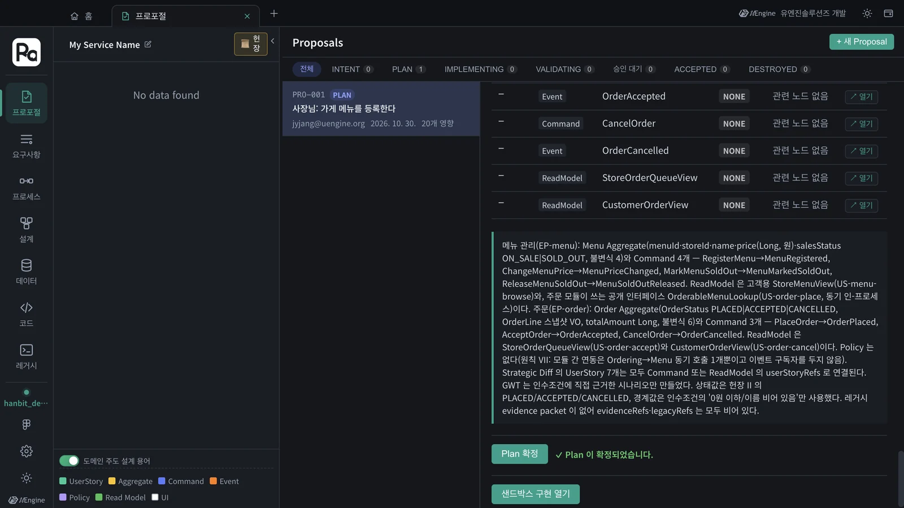

헌장을 근거로 Claude Code가 프로포절의 전술 설계(애그리거트 · 커맨드 · 이벤트 · 리드모델)와 아키텍처 결정(배포 · 데이터 접근 · API 계약 · 인증 · 테스트 전략)을 세웁니다. 결정마다 근거가 된 헌장 구절이 붙고, 헌장이 침묵하는 곳은 「헌장 공백」으로 드러납니다.
왜 Plan인가#
전략 설계(3장)는 「무엇을」입니다. 구현하려면 「어떻게」가 필요합니다. Plan은 두 가지를 정합니다.
- 전술 설계 — DDD의 구성 요소. 애그리거트(일관성을 지키는 단위), 커맨드(상태를 바꾸는 요청), 이벤트(일어난 사실), 리드모델(조회용 모델)
- 아키텍처 결정 — 배포 단위, 데이터 접근, API 계약, 인증, 테스트 전략 같은 것. 결정마다 「헌장의 어느 구절」에서 나왔는지 붙습니다
따라 하기 1 — Plan 생성#
PRO-001의 Plan 칸에서 Plan 생성을 누릅니다(헌장을 막 만들었다면 저절로 시작합니다).- 「Claude 가 전술적 분해와 아키텍처 계획을 작성하고 있습니다…」와 경과 시간이 보입니다. 보통 5~12분, 이 튜토리얼에서는 약 10분(598초) 걸렸습니다.

생성 중에는 그 화면에 머무세요
Plan 생성은 화면이 결과를 이어 받는 방식이라, 생성 중에 새로고침하거나 그 탭에서 다른 화면으로 옮기면 처음부터 다시 시작합니다. 다른 일을 하려면 홈에서 새 탭을 여세요.
따라 하기 2 — Plan 읽기#
생성이 끝나면 위에 진행 로그, 아래에 아키텍처 결정(Constitution 기반), 헌장 공백, Tactical Design, 그리고 요약이 나옵니다.

아키텍처 결정#
결정마다 오른쪽 위에 근거가 된 헌장 구획이 붙습니다(예: ↳ Architecture, ↳ V. 타입 안전과 계약 우선). 이 튜토리얼에서 나온 결정의 일부입니다.
| 결정 | 내용 | 근거 |
|---|---|---|
| 배포 환경 | Node.js 프로세스 1개에서 Express + SQLite 단일 파일 DB, React 빌드 결과를 같은 앱이 정적 서빙 | Architecture |
| Ingress · Service Mesh | 모놀리스라 N/A. 모듈 간 연동은 Ordering → Menu 단방향 인-프로세스 호출 하나 | Architecture, VII |
| 데이터 접근 | better-sqlite3 + 모듈별 repository, 마이그레이션 SQL. 접수·취소는 UPDATE … WHERE status = 'PLACED' 조건부 갱신 |
II, Technology Constraints |
| API 계약 | shared/ 의 zod 스키마 하나에서 TS 타입을 만들고 라우트 경계에서 검증 |
V |
| 인증 | Express 미들웨어가 서명 토큰으로 {userId, role, ownedStoreIds} 를 싣고, 서비스가 소유를 검사 |
IV |
| 테스트 전략 | Vitest 하나로 도메인 단위 테스트(불변식 4개) + API 통합 테스트(인메모리 SQLite) | VI |

헌장 공백#
헌장이 정하지 않았는데 계획에 꼭 필요한 영역은 노란 상자로 나옵니다. 이번에는 IDENTITY_AND_STORE_OWNERSHIP_SOURCE — 「어느 사장님이 어느 가게의 주인인가」의 원천이 헌장에도 전략 설계에도 없어서, 계획은 개발용 토큰으로 두고 공백으로 남겼습니다. 이런 것은 헌장을 보완하거나 다음 프로포절(예: 가게 등록)에서 다룹니다.
전술 설계#
Tactical Design에 만들 것(CREATE)이 우선순위(HIGH/MEDIUM)와 함께 나옵니다. 이번에는 20개였습니다.
| 애그리거트 | 커맨드 → 이벤트 | 리드모델 |
|---|---|---|
| Menu | RegisterMenu → MenuRegistered · ChangeMenuPrice → MenuPriceChanged · MarkMenuSoldOut → MenuMarkedSoldOut · ReleaseMenuSoldOut → MenuSoldOutReleased | StoreMenuView · OrderableMenuLookup |
| Order | PlaceOrder → OrderPlaced · AcceptOrder → OrderAccepted · CancelOrder → OrderCancelled | StoreOrderQueueView · CustomerOrderView |

항목 오른쪽의 열기를 누르면 그 요소를 설계 캔버스에 미리 보기로 띄웁니다. 「OrderableMenuLookup」은 주문 모듈이 메뉴 모듈에 묻는 공개 인터페이스입니다 — 헌장 원칙 I(다른 모듈 테이블을 직접 읽지 않는다)이 전술 설계로 내려온 모습입니다.
따라 하기 3 — Plan 확정#
- 맨 아래로 내려 요약을 읽고 Plan 확정을 누릅니다.
- 「✓ Plan 이 확정되었습니다.」가 나옵니다. 프로포절 상태는 Plan 단계로 진행 → 을 누를 때 이미 SUBMITTED(목록에서는 PLAN)가 되었고, 확정하면 구현으로 넘어갈 수 있습니다. 아래에 샌드박스 구현 열기가 생깁니다(6장).

확인할 것#
- Plan에 아키텍처 결정이 있고, 결정마다 근거 헌장 구획이 붙어 있다.
- Tactical Design에 애그리거트 Menu · Order가 있다.
- Plan을 확정했고 「샌드박스 구현 열기」가 보인다.
확인 문제#
- 아키텍처 결정 옆의
↳ V. 타입 안전과 계약 우선같은 표시는 무엇인가요? - 「헌장 공백」이 나왔습니다. 무시하고 진행해도 되나요?
- Plan 생성 중에 다른 화면을 보려면 어떻게 하나요?
정답
- 그 결정의 근거가 된 헌장 구획입니다. 결정이 헌장의 어디에서 나왔는지 추적할 수 있습니다.
- 진행은 됩니다. 다만 계획이 그 영역을 임시로 정했다는 뜻이므로, 헌장을 보완하거나 다음 프로포절에서 다루는 것이 좋습니다.
- 홈에서 새 탭을 엽니다. 생성 중인 탭을 새로고침하거나 그 탭에서 화면을 옮기면 처음부터 다시 시작합니다.